손해평가사 (2015-12-05 기출문제)
1과목: 상법(보험편)
1. 보험계약의 선의성을 유지하기 위한 제도로 옳지 않은 것은?
- 보험자의 보험약관설명의무
- 보험계약자의 손해방지의무
- 보험계약자의 중요사항 고지의무
- 인위적 보험사고에 대한 보험자면책
(정답률: 65%)

2. 타인을 위한 보험계약의 보험계약자가 피보험자의 동의를 얻어야 할 수 있는 것은?
- 보험증권교부청구권
- 보험사고 발생 전 보험계약해지권
- 특별위험 소멸에 따른 보험료감액청구권
- 보험계약 무효에 따른 보험료반환청구권
(정답률: 81%)
3. 보험약관의 조항 중 그 효력이 인정되지 않는 것은?
- 보험계약체결일 기준 1월 전부터 보험기간이 시작되기로 하는 조항
- 보험증권교부일로부터 2월 이내에 증권내용에 이의를 할 수 있도록 하는 조항
- 약관설명의무 위반 시 보험계약자가 1월 이내에 계약을 취소할 수 있도록 하는 조항
- 보험계약자의 보험료 반환청구권의 소멸시효기간을 3년으로 하는 조항
(정답률: 51%)
4. 보험대리상이 갖는 권한으로 옳지 않은 것은?
- 보험자 명의의 보험계약체결권
- 보험계약자에 대한 위험변경증가권
- 보험계약자에 대한 보험증권교부권
- 보험계약자로부터의 보험료수령권
(정답률: 69%)
5. 보험계약자가 보험료의 감액을 청구할 수 있는 경우에 해당하는 것은?
- 보험계약 무효 시 보험계약자와 피보험자가 선의이며 중대한 과실이 없는 경우
- 보험계약 무효 시 보험계약자와 보험수익자가 선의이며 중대한 과실이 없는 경우
- 특별한 위험의 예기로 보험료를 정한 때에 그 위험이 보험기간 중 소멸한 경우
- 보험사고 발생 전의 임의해지 시 미경과보험료에 대해 다른 약정이 없는 경우
(정답률: 76%)
6. 보험료에 관한 설명으로 옳지 않은 것은?
- 보험계약자는 계약체결 후 지체없이 보험료의 전부 또는 최초보험료를 지급하여야 한다.
- 보험계약자의 최초보험료 미지급시 다른 약정이 없는 한 계약성립 후 2월의 경과로 그 계약은 해제된 것으로 본다.
- 계속보험료 미지급으로 보험자가 계약을 해지하기 위해서는 보험계약자에게 상당기간을 정하여 그 기간 내에 지급할 것을 최고하여야 한다.
- 타인을 위한 보험의 경우 보험계약자의 보험료지급 지체시 보험자는 그 타인에게 보험료 지급을 최고하지 않아도 계약을 해지할 수 있다.
(정답률: 75%)
7. 보험계약 부활에 관한 설명으로 옳은 것은?
- 보험계약자의 고지의무위반으로 보험자가 보험계약을 해지하여야 한다.
- 보험계약자의 최초보험료 미지급으로 보험자가 보험계약을 해지하여야 한다.
- 보험계약자가 연체보험료에 법정이자를 더하여 보험자에게 지급하여야 한다.
- 보험자가 보험계약을 해지하고 해지환급금을 지급하지 않았어야 한다.
(정답률: 74%)
8. 보험계약자의 고지의무위반으로 인한 보험자의 계약해지권에 관한 설명으로 옳은 것은?
- 고지의무위반 사실이 보험사고의 발생에 영향을 미치지 않은 경우 보험자는 계약을 해지 하더라도 보험금을 지급할 책임이 있다.
- 보험자는 보험사고 발생 전에 한하여 해지권을 행사할 수 있다.
- 보험자가 계약을 해지한 경우 보험금을 지급할 책임이 없으며 이미 지급한 보험금에 대해서는 반환을 청구할 수 없다.
- 보험자는 고지의무위반사실을 안 날로부터 3월내에 해지권을 행사할 수 있다.
(정답률: 73%)
9. 위험의 변경증가에 관한 설명으로 옳은 것을 모두 고른 것은?
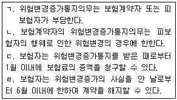
- ㄱ, ㄴ
- ㄱ, ㄷ
- ㄴ, ㄹ
- ㄷ, ㄹ
(정답률: 77%)
10. 보험료의 지급과 보험자의 책임개시에 관한 설명으로 옳지 않은 것은?
- 보험설계사는 보험자가 작성한 영수증을 보험계약자에게 교부하는 경우에만 보험료수령권이 있다.
- 보험자의 책임은 당사자 간에 다른 약정이 없으면 최초 보험료를 지급 받은 때로부터 개시 한다.
- 보험료불가분의 원칙에 의해 보험계약자는 다른 약정이 있더라도 일시에 보험료를 지급하여야 한다.
- 보험자의 보험료청구권은 2년간 행사하지 아니하면 시효의 완성으로 소멸한다.
(정답률: 72%)
11. 보험자의 보험금 지급과 면책사유에 관한 설명으로 옳은 것은?
- 보험금은 당사자 간에 특약이 있는 경우라도 금전이외의 현물로 지급할 수 없다.
- 보험자의 보험금 지급은 보험사고발생의 통지를 받은 후 10일 이내에 지급할 보험금액을 정하고 10일 이후에 이를 지급하여야 한다.
- 보험의 목적인 과일의 자연 부패로 인하여 발생한 손해에 대해서 보험자는 보험금을 지급하여야 한다.
- 건물을 특약 없는 화재보험에 가입한 보험계약에서 홍수로 건물이 멸실된 경우 보험자는 보험금을 지급하지 않아도 된다.
(정답률: 71%)
12. 재보험계약에 관한 설명으로 옳지 않은 것은?
- 재보험계약은 원보험계약의 효력에 영향을 미치지 않는다.
- 화재보험에 관한 규정을 준용한다.
- 재보험자의 제3자에 대한 대위권행사가 인정된다.
- 보험계약자의 불이익변경금지원칙은 적용되지 않는다.
(정답률: 61%)
13. 고지의무에 관한 설명으로 옳지 않은 것은?
- 보험설계사는 고지수령권을 가진다.
- 보험자가 서면으로 질문한 사항은 중요한 사항으로 추정한다.
- 고지의무를 부담하는 자는 보험계약자와 피보험자이다.
- 고지의무자의 고의 또는 중대한 과실로 부실의 고지를 한 경우 고지의무 위반이 된다.
(정답률: 77%)
14. 보험자의 손해보상의무에 관한 설명으로 옳지 않은 것은?
- 손해보험계약의 보험자는 보험사고로 인하여 생길 피보험자의 재산상의 손해를 보상할 책임이 있다.
- 보험자의 보험금 지급의무는 2년의 단기시효로 소멸한다.
- 화재보험계약의 목적을 건물의 소유권으로 한 경우 보험사고로 인하여 피보험자가 얻을 임대료수입은 특약이 없는 한 보험자가 보상할 손해액에 산입하지 않는다.
- 신가보험은 손해보험의 이득금지원칙에도 불구하고 인정된다.
(정답률: 71%)
15. 손해보험계약에서의 피보험이익에 관한 설명으로 옳지 않은 것은?
- 피보험이익은 보험의 도박화를 방지하는 기능이 있다.
- 피보험이익은 적법한 것이어야 한다.
- 피보험이익은 보험자의 책임범위를 정하는 표준이 된다.
- 동일한 건물에 대하여 소유권자와 저당권자는 각자 독립한 보험계약을 체결할 수 없다.
(정답률: 76%)
16. 기평가보험과 미평가보험에 관한 설명으로 옳지 않은 것은?
- 기평가보험이란 보험계약 체결시 당사자간에 피보험이익의 평가에 관하여 미리 합의한 보험을 말한다.
- 기평가보험의 경우 당사자간에 보험가액을 정한 때에는 그 가액은 사고발생시의 가액으로 정한 것으로 추정한다.
- 기평가보험의 경우 협정보험가액이 사고발생시의 가액을 현저하게 초과할 때에는 협정 보험가액을 보험가액으로 한다.
- 보험계약체결시 당사자간에 보험가액을 정하지 아니한 경우에는 사고발생시의 가액을 보험가액으로 한다.
(정답률: 71%)
17. 중복보험에 관한 설명으로 옳은 것을 모두 고른 것은?
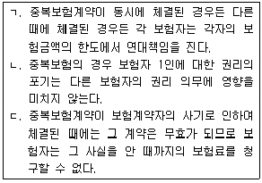
- ㄱ, ㄴ
- ㄱ, ㄷ
- ㄴ, ㄷ
- ㄱ, ㄴ, ㄷ
(정답률: 67%)
18. 보험가액에 관한 설명으로 옳은 것은?
- 보험자의 계약상의 최고보상한도로서의 의미를 가진다.
- 일부보험은 어느 경우에도 보험자가 보험가액을 한도로 실제손해를 보상할 책임을 진다.
- 피보험이익을 금전으로 평가한 가액을 의미한다.
- 보험가액은 보험금액과 항상 일치한다.
(정답률: 59%)
19. 손해보험에서 손해액을 산정하는 기준으로 옳지 않은 것은?
- 보험자가 보상할 손해액은 그 손해가 발생한 때와 곳의 가액에 의하여 산정한다.
- 다른 약정이 있으면 신품가액에 의하여 손해액을 산정할 수 있다.
- 손해액 산정 비용은 보험계약자의 부담으로 한다.
- 다른 약정이 없으면 보험자가 보상할 손해액에는 피보험자가 얻을 이익을 산입하지 않는다.
(정답률: 80%)
20. 보험의 목적에 보험자의 담보 위험으로 인한 손해가 발생한 후 그 목적이 보험자의 비담보 위험으로 멸실된 경우 보험자의 보상책임은?
- 보험자는 모든 책임에서 면책된다.
- 보험자의 담보 위험으로 인한 손해만 보상한다.
- 보험자의 비담보 위험으로 인한 손해만 보상한다.
- 보험자는 멸실된 손해 전체를 보상한다.
(정답률: 73%)
21. 보험계약자 및 피보험자의 손해방지의무에 관한 설명으로 옳지 않은 것은?
- 손해의 방지와 경감을 위하여 노력하여야 한다.
- 손해방지와 경감을 위하여 필요 또는 유익하였던 비용과 보상액이 보험금액을 초과한 경우 보험자가 이를 부담한다.
- 보험사고 발생을 전제로 하므로 보험사고가 발생하면 생기는 것이다.
- 보험자가 책임을 지지 않는 손해에 대해서도 손해방지의무를 부담한다.
(정답률: 71%)
22. 손해보험에 관한 설명으로 옳지 않은 것은?
- 보험의 목적의 성질 및 하자로 인한 손해는 보험자가 보상할 책임이 있다.
- 피보험이익은 적어도 사고발생시까지 확정할 수 있는 것이어야 한다.
- 보험자가 손해를 보상할 경우에 보험료의 지급을 받지 않은 잔액이 있으면 이를 공제할 수 있다.
- 경제적 가치를 평가할 수 있는 이익은 피보험이익이 된다.
(정답률: 69%)
23. 잔존물 대위에 관한 설명으로 옳은 것은?
- 보험의 목적 일부가 멸실한 경우 발생한다.
- 보험금액의 전부를 지급하여야 보험자가 잔존물 대위권을 취득할 수 있다.
- 일부보험의 경우에는 잔존물 대위가 인정되지 않는다.
- 보험자는 잔존물에 대한 물권변동의 절차를 밟아야 대위권을 취득할 수 있다.
(정답률: 71%)
24. 일부보험에 관한 설명으로 옳지 않은 것은?
- 보험금액이 보험가액보다 작아야 한다.
- 다른 약정이 없으면 보험자는 보험금액의 보험가액에 대한 비율에 따라 보상책임을 진다.
- 특약이 없는 경우 보험기간 중에 물가 상승으로 보험가액이 증가한 때에는 일부보험으로 판단하지 않는다.
- 다른 약정이 없으면 손해방지비용에 대해서도 비례보상주의를 따른다.
(정답률: 72%)
25. 화재보험에 관한 설명으로 옳지 않은 것은?
- 보험자는 화재로 인한 손해의 감소에 필요한 조치로 인하여 생긴 손해를 보상할 책임이 있다.
- 연소 작용에 의하지 아니한 열의 작용으로 인한 손해는 보험자의 보상 책임이 없다.
- 화재로 인한 손해는 상당인과관계가 있어야 한다.
- 화재 진화를 위해 살포한 물로 보험목적이 훼손된 손해는 보상하지 않는다.
(정답률: 75%)
2과목: 농어업재해보험법령
26. 농어업재해보험법상 농업재해보험심의회의 심의사항이 아닌 것은?
- 재해보험 상품의 인가
- 재해보험 목적물의 선정
- 재해보험에서 보상하는 재해의 범위
- 농어업재해재보험사업에 대한 정부의 책임 범위
(정답률: 62%)
27. 다음 설명에 해당되는 용어는?
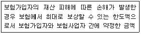
- 보험료
- 보험금
- 보험가입금액
- 손해액
(정답률: 58%)
28. 농어업재해보험법상 재해보험의 종류가 아닌 것은?
- 농기계재해보험
- 농작물재해보험
- 양식수산물재해보험
- 가축재해보험
(정답률: 76%)
29. 현행 농어업재해보험법령상 재해보험의 보험목적물이 아닌 것은?(오류 신고가 접수된 문제입니다. 반드시 정답과 해설을 확인하시기 바랍니다.)
- 옥수수
- 밀
- 국화
- 복분자
(정답률: 50%)
30. 재해보험에서 보상하는 재해의 범위 중 보험목적물 “벼”에서 보상하는 병충해가 아닌것은?
- 흰잎마름병
- 잎집무늬마름병
- 줄무늬잎마름병
- 벼멸구
(정답률: 61%)
31. 농어업재해보험법령상 재해보험 요율산정에 관한 설명으로 옳지 않은 것은?
- 재해보험사업자가 산정한다.
- 보험목적물별 또는 보상방식별로 산정한다.
- 객관적이고 합리적인 통계자료를 기초로 산정한다.
- 시ㆍ군ㆍ자치구 또는 읍ㆍ면ㆍ동 행정구역 단위까지 산정한다.
(정답률: 66%)
32. 농어업재해보험법령상 농작물재해보험 손해평가인으로 위촉될 수 있는 자의 자격요건이 아닌 것은?
- 「농수산물 품질관리법」에 따른 농산물품질관리사
- 재해보험 대상 농작물을 3년 이상 경작한 경력이 있는 농업인
- 재해보험 대상 농작물 분야에서 「국가기술자격법」에 따른 기사 이상의 자격을 소지한 사람
- 공무원으로 지방자치단체에서 농작물재배 분야에 관한 연구ㆍ지도 업무를 3년 이상 담당한 경력이 있는 사람
(정답률: 78%)
33. 농어업재해보험법상 손해평가사의 자격 취소에 해당되는 자만을 모두 고른 것은?
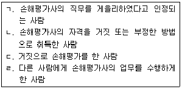
- ㄱ, ㄴ
- ㄱ, ㄷ, ㄹ
- ㄴ, ㄷ, ㄹ
- ㄱ, ㄴ, ㄷ, ㄹ
(정답률: 76%)
34. 농어업재해보험법상 손해평가사의 업무가 아닌 것은?
- 피해발생의 통지
- 피해사실의 확인
- 손해액의 평가
- 보험가액의 평가
(정답률: 67%)
35. 농어업재해보험법령상 재해보험사업자가 재해보험사업을 원활히 수행하기 위하여 필요한 경우로서 보험모집 및 손해평가 등 재해보험 업무의 일부를 위탁할 수 있는 대상이 아닌 자는?
- 「산림조합법」에 따라 설립된 품목별 산림조합
- 「농업협동조합법」에 따라 설립된 농업협동조합중앙회
- 「보험업법」제187조에 따라 손해사정을 업으로 하는 자
- 「농업협동조합법」에 따라 설립된 지역축산업협동조합
(정답률: 59%)
36. 농어업재해보험법상 재해보험 가입자 또는 사업자에 대한 정부의 재정지원에 관한설명으로 옳지 않은 것은?
- 재해보험가입자가 부담하는 보험료의 일부를 지원할 수 있다.
- 재해보험사업자가 재해보험가입자에게 지급하는 보험금의 일부를 지원할 수 있다.
- 재해보험사업자의 재해보험의 운영 및 관리에 필요한 비용의 전부 또는 일부를 지원할 수 있다.
- 「풍수해보험법」에 따른 풍수해보험에 가입한 자가 동일한 보험목적물을 대상으로 재해보험에 가입한 경우는 보험료를 지원하지 아니한다.
(정답률: 57%)
37. 농어업재해보험법상 재해보험사업을 효율적으로 추진하기 위한 농림축산식품부의 업무(업무를 위탁한 경우를 포함한다)로 볼 수 없는 것은?
- 재해보험 요율의 승인
- 재해보험 상품의 연구 및 보급
- 손해평가인력의 육성
- 손해평가기법의 연구ㆍ개발 및 보급
(정답률: 66%)
38. 농어업재해보험법상 과태료의 부과대상이 아닌 것은?
- 재해보험사업자가 「보험업법」을 위반하여 보험안내를 한 경우
- 재해보험사업자가 아닌 자가 「보험업법」을 위반하여 보험안내를 한 경우
- 손해평가사가 고의로 진실을 숨기거나 거짓으로 손해평가를 한 경우
- 재해보험사업자가 농림축산식품부에 관계서류 제출을 거짓으로 한 경우
(정답률: 65%)
39. 다음 ( )안에 해당되지 않는 자는?
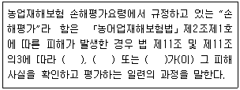
- 손해평가사
- 손해사정사
- 손해평가인
- 손해평가보조인
(정답률: 74%)
40. 농업재해보험 손해평가요령에 따른 손해평가인 위촉의 취소 및 해지에 관한 설명으로 옳지 않은 것은?
- 거짓 또는 그 밖의 부정한 방법으로 손해평가인으로 위촉된 자에 대해서는 그 위촉을 취소하여야 한다.
- 손해평가업무를 수행하면서 「개인정보보호법」을 위반하여 재해보험가입자의 개인정보를 누설한 자는 그 위촉을 해지할 수 있다.
- 재해보험사업자는 위촉을 취소하는 때에는 해당 손해평가인에게 청문을 실시하여야 한다.
- 재해보험사업자는 업무의 정지를 명하고자 하는 때에는 해당 손해평가인에 대한 청문을 생략할 수 있다.
(정답률: 66%)
41. 농업재해보험 손해평가요령에서 규정하고 있는 손해평가인 위촉에 관한 설명으로 옳지 않은 것은?
- 재해보험사업자는 손해평가 업무를 원활히 수행하게 하기 위하여 손해평가보조인을 운용 할 수 있다.
- 재해보험사업자의 업무를 위탁받은 자는 손해평가보조인을 운용할 수 있다.
- 재해보험사업자가 손해평가인을 위촉한 경우에는 실무교육을 거쳐 그 자격을 표시할 수있는 손해평가인증을 발급하여야 한다.
- 재해보험사업자는 보험가입자 수 등에도 불구하고 보험사업비용을 고려하여 손해평가인 위촉규모를 최소화하여야 한다.
(정답률: 76%)
42. 농업재해보험 손해평가요령에 규정된 재해보험사업자가 손해평가인으로 위촉된 자에 대해 실시하는 보수교육 실시기준으로 옳은 것은?
- 월 1회 이상
- 월 2회 이상
- 연 1회 이상
- 연 2회 이상
(정답률: 47%)
43. 농업재해보험 손해평가요령에 따른 종합위험방식 상품의 조사내용 중 “재파종 피해 조사”에 해당되는 품목은?
- 양파
- 감자
- 마늘
- 콩
(정답률: 67%)
44. 농업재해보험 손해평가요령에 따른 특정위험방식 상품 “사과”의 「발아기~적과전」 생육시기에 해당되는 재해로 옳지 않은 것은?
- 태풍(강풍)ㆍ집중호우
- 우박
- 봄동상해
- 가을동상해
(정답률: 60%)
45. 특정위험방식 과실손해보장 중 “배”의 경우 다음 조건에 해당되는 보험금은?
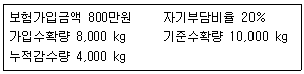
- 160만원
- 240만원
- 320만원
- 400만원
(정답률: 45%)
46. 농업재해보험 손해평가요령에 따른 농작물의 보험가액 산정에 관한 설명으로 옳은 것은?
- 특정위험방식 보험가액은 적과후착과수조사를 통해 산정한 가입수확량에 보험가입 당시의 단위당 가입가격을 곱하여 산정한다.
- 종합위험방식 보험가액은 보험증권에 기재된 보험목적물의 가입수확량에 보험가입 당시의 단위당 가입가격을 곱하여 산정한다.
- 적과전종합위험방식의 보험가액은 적과후착과수조사를 통해 산정한 기준수확량에 보험가입 당시의 단위당 가입가격을 곱하여 산정한다.
- 나무손해보장의 보험가액은 기재된 보험목적물이 나무인 경우로 최종 보험사고 발생 시의 해당 농지 내에 심어져 있는 전체 나무 수(피해 나무 수 포함)에 보험가입 당시의 나무당 가입가격을 곱하여 산정한다.
(정답률: 50%)
47. 농업재해보험 손해평가요령에 따른 손해평가결과 검증에 관한 설명으로 옳은 것은?
- 재해보험사업자 및 재해보험사업의 재보험사업자는 손해평가반이 실시한 손해평가결과를 확인하고자 하는 경우에는 손해평가를 실시한 전체 보험목적물에 대하여 검증조사를 하여야 한다.
- 농림축산식품부장관은 재해보험사업자로 하여금 검증조사를 하게 할 수 있으며, 재해보험 사업자는 특별한 사유가 없는 한 이에 응하여야 한다.
- 재해보험사업자는 검증조사결과 현저한 차이가 발생되어 재조사가 불가피하다고 판단될 경우라도 해당 손해평가반이 조사한 전체 보험목적물에 대하여 재조사를 할 수 없다.
- 보험가입자가 정당한 사유없이 검증조사를 거부하는 경우 검증조사반은 검증조사결과 작성을 생략하고 재해보험사업자에게 제출하지 않아도 된다.
(정답률: 63%)
48. 농업재해보험 손해평가요령에 따른 피해사실 확인 내용으로 옳은 것은?
- 손해평가반은 보험책임기간에 관계없이 발생한 피해에 대해서는 재해보험사업자에게 피해 발생을 통지하여야 한다.
- 재해보험사업자는 손해평가반으로 하여금 일정기간을 정하여 보험목적물의 피해사실을 확인하게 하여야 한다.
- 재해보험사업자는 손해평가반으로 하여금 일정기간을 정하여 보험목적물의 손해평가를 실시하게 하여야 한다.
- 재해보험사업자가 손해평가반에게 손해평가를 위탁할 때에는 해당 보험가입자의 보험계약 사항 중 손해평가와 관련된 사항을 통보하여야 한다.
(정답률: 50%)
49. 농업재해보험 손해평가요령에 따른 보험목적물별 손해평가 단위로 옳지 않은 것은?
- 벼 - 농가별
- 사과 - 농지별
- 돼지 - 개별가축별
- 비닐하우스 - 보험가입 목적물별
(정답률: 69%)
50. 농업재해보험 손해평가요령에 따른 농업시설물의 보험가액 및 손해액 산정과 관련하여 옳지 않은 것은?
- 보험가액은 보험사고가 발생한 때와 곳에서 평가한다.
- 보험가액은 피해목적물의 재조달가액에서 내용연수에 따른 감가상각률을 적용하여 계산한 감가상각액을 차감하여 산정한다.
- 손해액은 보험사고가 발생한 때와 곳에서 산정한 피해목적물의 원상복구비용을 말한다.
- 보험가입당시 보험가액 및 손해액 산정방식에 대해서는 보험가입자와 재해보험사업자가 별도로 정할 수 없다.
(정답률: 71%)
3과목: 재배학 및 원예작물학
51. 농업상 용도에 의한 작물의 분류로 옳지 않은 것은?
- 공예작물
- 사료작물
- 주형작물
- 녹비작물
(정답률: 75%)
52. 토양의 물리적 특성이 아닌 것은?
- 보수성
- 환원성
- 통기성
- 배수성
(정답률: 76%)
53. 토양의 입단파괴 요인은?
- 경운 및 쇄토
- 유기물 시용
- 토양 피복
- 두과작물 재배
(정답률: 77%)
54. 토양수분에 관한 설명으로 옳지 않은 것은?
- 결합수는 식물이 흡수ㆍ이용할 수 없다.
- 물은 수분포텐셜(water potential)이 높은 곳에서 낮은 곳으로 이동한다.
- 중력수는 pF 7.0 정도로 중력에 의해 지하로 흡수되는 수분이다.
- 토양수분장력은 토양입자가 수분을 흡착하여 유지하려는 힘이다.
(정답률: 65%)
55. 다음 ( )안에 들어갈 내용을 순서대로 옳게 나열한 것은?
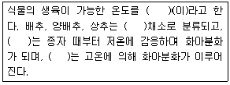
- 생육적온, 호온성, 배추, 상추
- 유효온도, 호냉성, 배추, 상추
- 생육적온, 호냉성, 상추, 양배추
- 유효온도, 호온성, 상추, 배추
(정답률: 63%)
56. 한계일장이 없어 일장조건에 관계없이 개화하는 중성식물은?
- 상추
- 국화
- 딸기
- 고추
(정답률: 62%)
57. 식물의 종자가 발아한 후 또는 줄기의 생장점이 발육하고 있을 때 일정기간의 저온을 거침으로써 화아가 형성되는 현상은?
- 휴지
- 춘화
- 경화
- 좌지
(정답률: 75%)
58. 이앙 및 수확시기에 따른 벼의 재배양식에 관한 설명이다. ( )안에 들어갈 내용으로 옳은 것은?
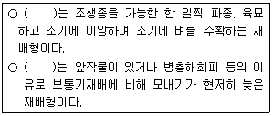
- 조생재배, 만생재배
- 조식재배, 만기재배
- 조생재배, 만기재배
- 조기재배, 만식재배
(정답률: 56%)
59. 작물의 취목번식 방법 중에서 가지의 선단부를 휘어서 묻는 방법은?
- 선취법
- 성토법
- 당목취법
- 고취법
(정답률: 63%)
60. 작물의 병해충 방제법 중 경종적 방제에 관한 설명으로 옳은 것은?
- 적극적인 방제기술이다.
- 윤작과 무병종묘재배가 포함된다.
- 친환경농업에는 적용되지 않는다.
- 병이 발생한 후에 더욱 효과적인 방제기술이다.
(정답률: 63%)
61. 다음 설명에 해당되는 해충은?
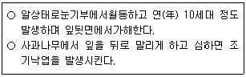
- 사과혹진딧물
- 복숭아심식나방
- 사과굴나방
- 조팝나무진딧물
(정답률: 70%)
62. 일소현상에 관한 설명으로 옳은 것은?
- 시설재배 시 차광막을 설치하여 일소를 경감시킬 수 있다.
- 겨울철 직사광선에 의해 원줄기나 원가지의 남쪽수피 부위에 피해를 주는 경우는 일소로 진단하지 않는다.
- 개심자연형 나무에서는 배상형 나무에 비해 더 많이 발생한다.
- 과수원이 평지에 위치할 때 동향의 과수원이 서향의 과수원보다 일소가 더 많이 발생한다.
(정답률: 76%)
63. 벼 재배시 풍수해의 예방 및 경감 대책으로 옳지 않은 것은?
- 내도복성 품종으로 재배한다.
- 밀식재배를 한다.
- 태풍이 지나간 후 살균제를 살포한다.
- 침ㆍ관수된 논은 신속히 배수시킨다.
(정답률: 76%)
64. 과수작물의 동해 및 상해(서리피해)에 관한 설명으로 옳지 않은 것은?
- 배나무의 경우 꽃이 일찍 피는 따뜻한 지역에서 늦서리 피해가 많이 일어난다.
- 핵과류에서 늦서리 피해에 민감하다.
- 꽃눈이 잎눈보다 내한성이 강하다.
- 서리를 방지하는 방법에는 방상팬 이용, 톱밥 및 왕겨 태우기 등이 있다.
(정답률: 78%)
65. 벼 담수표면산파 재배시 도복에 관한 설명으로 옳은 것은?
- 벼 무논골뿌림재배에 비해 도복이 경감된다.
- 도복경감제를 살포하면 벼의 하위절간장이 짧아져서 도복이 경감된다.
- 질소질 비료를 다량 시비하면 도복이 경감된다.
- 파종직후에 1회 낙수를 강하게 해 주면 도복이 경감된다.
(정답률: 67%)
66. 우리나라 우박피해에 관한 설명으로 옳지 않은 것은?
- 전국적으로 7∼8월에 집중적으로 발생한다.
- 과실 또는 새가지에 타박상이나 열상 등을 일으킨다.
- 비교적 단시간에 많은 피해를 일으키고, 피해지역이 국지적인 경우가 많다.
- 그물(방포망)을 나무에 씌워 피해를 경감시킬 수 있다.
(정답률: 77%)
67. 일반적으로 딸기와 감자의 무병주 생산을 위한 방법은?
- 자가수정
- 종자번식
- 타가수정
- 조직배양
(정답률: 64%)
68. 과채류의 결실 조절방법으로 모두 고른 것은?
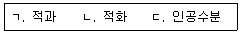
- ㄱ
- ㄱ, ㄴ
- ㄴ, ㄷ
- ㄱ, ㄴ, ㄷ
(정답률: 77%)
69. 다음은 식물호르몬인 에틸렌에 관한 설명이다. 옳은 것을 모두 고른 것은?
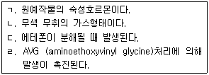
- ㄱ
- ㄴ, ㄷ
- ㄱ, ㄴ, ㄷ
- ㄴ, ㄷ, ㄹ
(정답률: 70%)
70. 호흡 비급등형 과실인 것은?
- 사과
- 자두
- 포도
- 복숭아
(정답률: 70%)
71. 다음 중 생육에 적합한 토양 pH 가 가장 낮은 것은?
- 블루베리나무
- 무화과나무
- 감나무
- 포도나무
(정답률: 70%)
72. 과수원의 토양표면 관리법 중 초생법의 장점이 아닌 것은?
- 토양의 입단화가 촉진된다.
- 지력유지에 도움이 된다.
- 토양침식과 양분유실을 방지한다.
- 유목기에 양분 경합이 일어나지 않는다.
(정답률: 75%)
73. 절화의 수명연장방법으로 옳지 않은 것은?
- 화병의 물에 살균제와 당을 첨가한다.
- 산성물(pH 3.2∼3.5)에 침지한다.
- 에틸렌을 엽면살포한다.
- 줄기 절단부를 수초간 열탕처리한다.
(정답률: 62%)
74. 작물의 시설재배에서 연질 피복재만을 고른 것은?
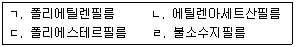
- ㄱ, ㄴ
- ㄱ, ㄹ
- ㄴ, ㄷ
- ㄷ, ㄹ
(정답률: 66%)
75. 작물의 시설재배에 사용되는 기화냉방법이 아닌 것은?
- 팬앤드패드(fan & pad)
- 팬앤드미스트(fan & mist)
- 팬앤드포그(fan & fog)
- 팬앤드덕트(fan & duct)
(정답률: 70%)